Dean’s List Graduate – CIS Diploma
A dedicated and high-achieving graduate of the Computer Information Systems (CIS) Diploma program, consistently earning a place on the Dean's List throughout my studies. This recognition reflects my commitment to academic excellence, strong problem-solving abilities, and passion for the tech field. My journey through the program not only sharpened my technical skills but also reinforced the importance of perseverance, focus, and continuous learning.
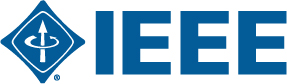
Capstone Project – IEEE OC Student Branch Website
As part of my capstone project, our group developed and launched a dynamic website for the IEEE Okanagan College Student Branch. This project allowed me to apply my skills in web development, project management, and team collaboration while delivering a modern, user-friendly platform for student members to connect, access resources, and stay updated on events. The website not only showcased my technical expertise but also demonstrated my ability to address the unique needs of a student organization in a real-world setting.
https://studentbranches.ieee.org/ca-oc/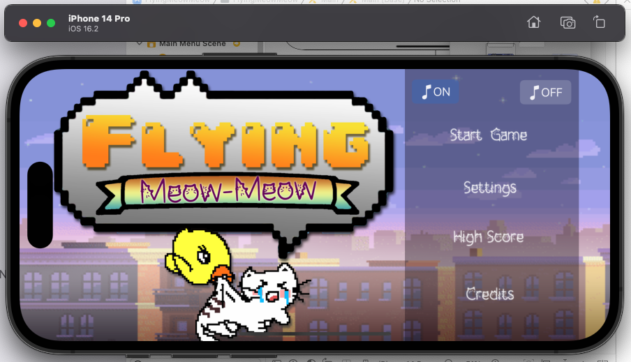
Final Project – iOS App Development
For my final project in iOS App Development, I designed and developed a fully functional iOS app using Xcode. This project provided an opportunity to apply my knowledge of Swift programming, UI/UX design, and app architecture to create a seamless, intuitive, and engaging user experience. The app features several key functionalities taught in class, such as data persistence (for saving and retrieving user data) and network connectivity (for syncing data with remote servers), showcasing my ability to take an app from concept to deployment. This experience not only sharpened my technical skills but also deepened my understanding of mobile development within Apple's ecosystem.
FlyingMeowMeow.pdf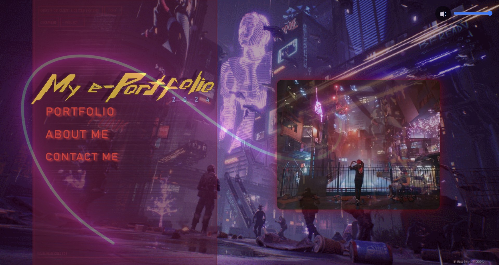
Final Project – Client-Side Web System (ePortfolio)
For my final project in Client-Side Web System, I designed and developed a fully responsive Cyberpunk Themed ePortfolio to showcase my academic achievements, technical skills, and projects. Using HTML, CSS, and JavaScript, I created an interactive and visually appealing platform where I highlight key milestones in my education and career. The ePortfolio also features a clean, user-friendly design that adapts to various screen sizes, ensuring an optimal viewing experience across devices. This project allowed me to apply principles of web design, usability, and responsive development, demonstrating my ability to create a polished web application from start to finish.
Cyberpunk Themed ePortfolio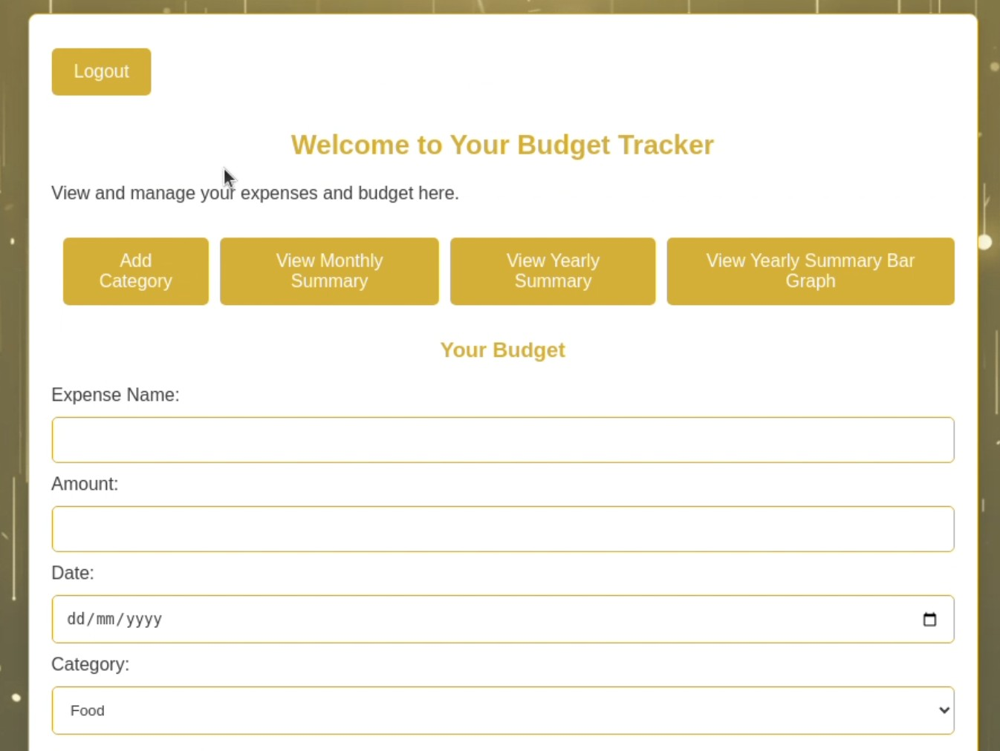
Final Project – Web Development with LAMP (Budget Tracker)
For my final project in Web Development with LAMP (Linux, Apache, MySQL, PHP), I developed a fully functional Budget Tracker application. The app allows users to track their income, expenses, and set budget goals in an intuitive and secure platform. Using PHP for the server-side logic, MySQL for database management, and HTML/CSS for front-end design, I created a user-friendly interface that allows for easy navigation and real-time updates. This project helped me refine my skills in full-stack development and database management, while also enhancing my understanding of the LAMP stack in building dynamic web applications.
BudgetTracker.mp4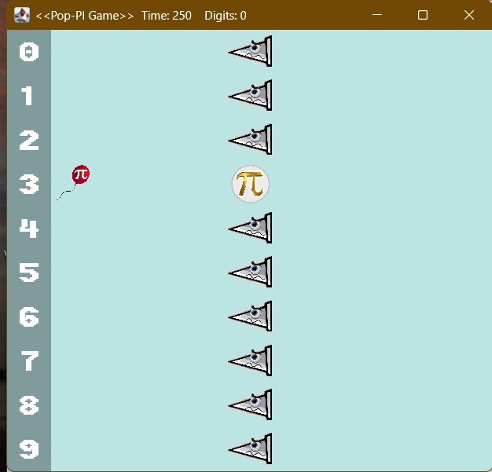
Java Mini Game – Pop-PI Game
As part of my programming practice in Java, I developed a mini game called Pop-PI Game. This interactive game challenges players to test their memory of the digits of Pi by collecting them in the correct sequence during gameplay. Designed with basic game mechanics and a focus on user interaction, Pop-PI combines education with entertainment, reinforcing numerical recall in a fun way. The project helped me strengthen my Java programming skills, particularly in areas like event handling, GUI development, and game logic.
PopPiGame.mp4Technical Stack
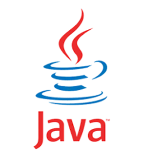
Java
Strong OOP foundation; used in building desktop applications and games.

C
Learned low-level memory management and procedural programming techniques.
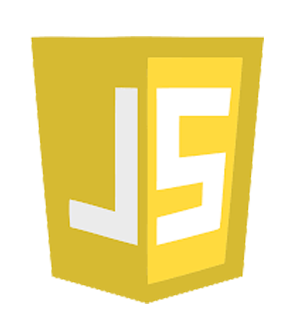
JavaScript
Used for client-side interactivity and DOM manipulation in web apps.
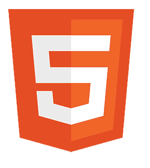
HTML
Foundation of web structure; used extensively across projects and ePortfolio.
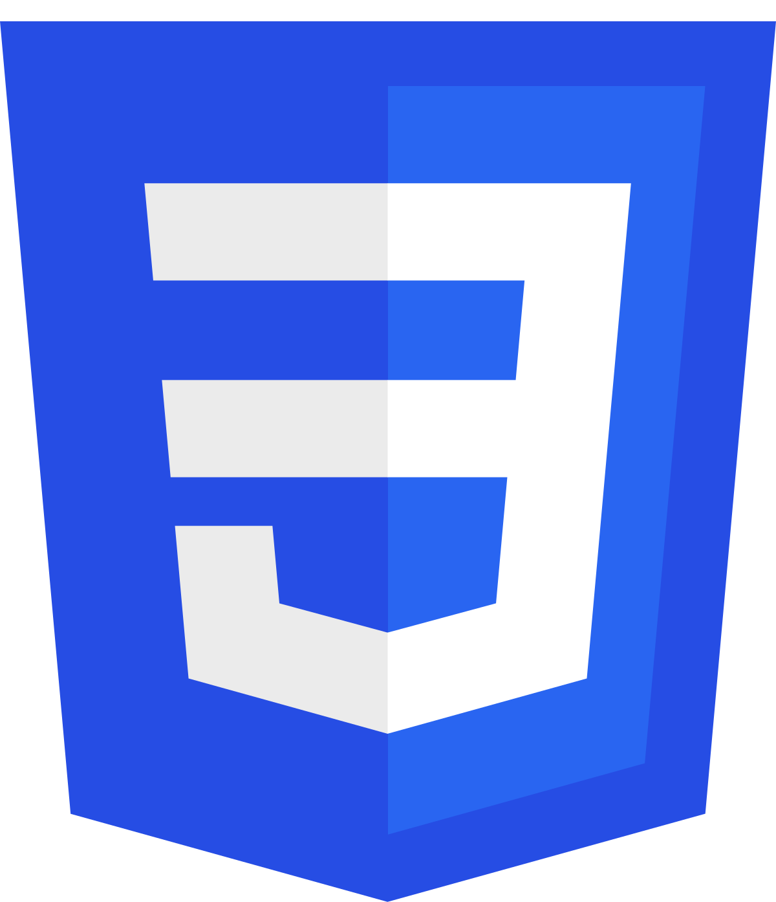
CSS
Created responsive and visually engaging layouts with Flexbox and Grid.
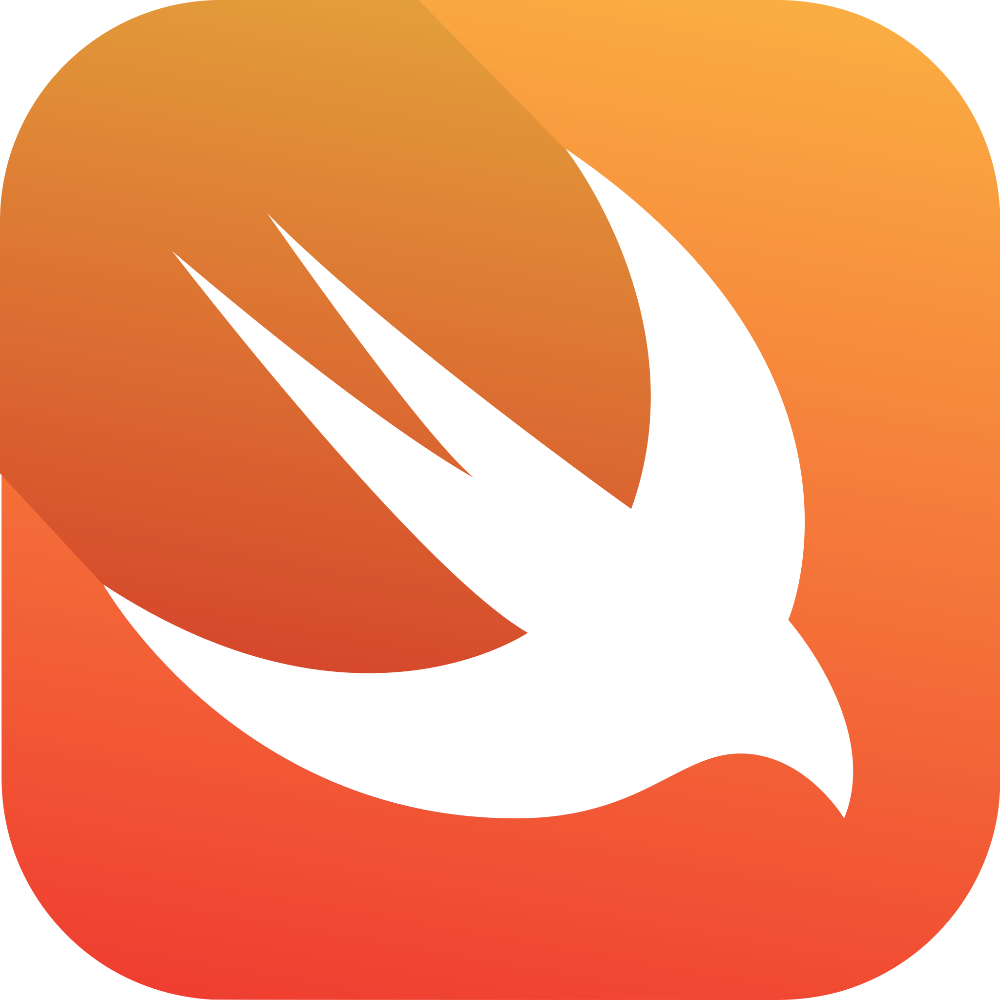
Swift
Used in iOS development to build interactive mobile applications in Xcode.
Visual Programming
Learned flow-based programming with tools like Scratch and LabVIEW.
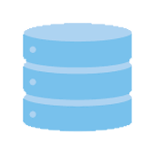
SQL
Utilized for database creation, queries, and data manipulation in web projects.
JUnit
Used for writing and automating unit tests in Java-based applications.
WordPress
Built and customized websites using themes, plugins, and basic PHP.
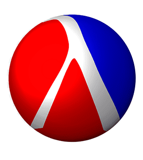
Scheme
Explored functional programming concepts through recursion and lists.
Jira
Used for agile project management, sprint planning, and team collaboration.